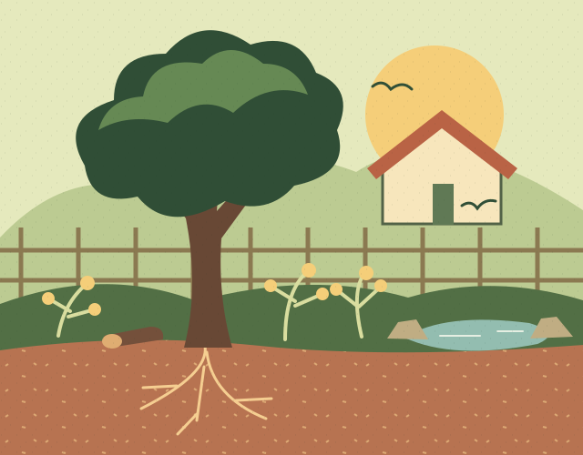

Hello, Three Neat Things readers
Gardens that give back.
Your garden is part of something bigger. Find out what your patch offers local wildlife, how it fits into the neighbourhood and what you could do next.
Get my garden scoreFree to begin · About four minutes · Provisional score out of 100

A quick look around
What’s hiding in your patch?
Pick something you might find outside. See what it tells us about how a garden works.
01 A tree with plants underneath
Canopy, shrubs and groundcovers make different places to feed and shelter. The Registry looks at these layers and at how much of the planting belongs to the local landscape.
02 Somewhere for rain to soak in
A planted dip can slow rainwater and give it time to soak into the soil. The score looks at how the garden holds water and how well its soil functions.
03 A fallen branch or a pile of rocks
Logs and rocks can make cool, sheltered places for small creatures. The Registry looks for features like these, along with records of the wildlife you’ve actually seen.
04 A leafy garden over the fence
Nearby gardens and parks can form stepping stones across a neighbourhood. The Registry looks at where your garden sits in relation to other habitat.
05 A photo you took last spring
Photos, plant lists and sightings build a record of what was there and what’s changed. That evidence is part of the Registry score.
From a score to a living record
One garden at a time.
Think of it like an energy rating for the garden around your home. The Registry scores planting structure, soil and water, habitat, connectivity and evidence. Your first score is self-assessed. Over time, the record can show what’s changed as your garden grows.
Put those gardens together and you can start to see where habitat could connect across the neighbourhood.
See a registered gardenJoin the Registry pilot
Start with the garden you have.
Tell us a little about your garden and get a starting score. The Registry is also developing Yield, a programme to explore incentives for growing indigenous and native plants at home.
Get my garden score